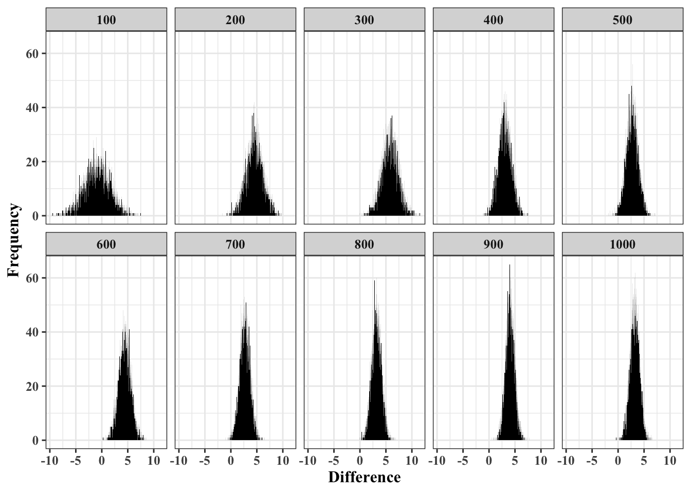

The topic of this post is what King et. al (2000) call “statistical simulation,” and Gelman and Hill (2007) call “informal Bayesian inference.”
The idea is to explore the results of classical methods by pushing data through different components of fitted models. Interestingly, King et. al (2000) make comparisons to the bootstrap, while Gelman and Hill (2007) consider it analogous to Full Bayes with non-informative priors. I’ve used this approach a surprising amount in my work. It can provide a framework for interpretations that are descriptively rich as well as simple to implement and explain. Particularly, it provides a way to make contrasts and linear combinations that are otherwise difficult.
Typically, the situation where I’ve reached for information Bayes is one where I used a classical method for expediency: too much data and/or too many parameters for my equipment, however, have a less conventional question or am not satisfied with the coefficient report. Generally, this approach has allowed me to quantify heterogeneity in fixed effects and gain intuition about the uncertainty in predictions.
For this post, I’m going to focus on using informal Bayes to find the difference between parameters in linear models. The example I focus on here is simple, however, extends easily to more complex models. In practice, I’ve used this approach to compare parameters on different levels of hierarchical models, as well as assess which intervention, among several which are implemented simultaneously, is the most advantageous for additional investment.
The first thing to do is build a function to make it easier to draw posterior samples from common models. The function below takes three inputs, a fitted model (mod), the number of posterior samples (bsamps), and a logical indicator which tells the function if a “robust” variance-covariance matrix is desired (robust). Fundamentally, the function retrieves or calculates the variance-covariance matrix from the fitted model, then samples from a multivariate normal (using MASS::mvnorm for simplicity) with mean vector specified as the point estimates and variance-covariance matrix from the fitted model1.
Code
infbayes <-function(mod, robust =TRUE, bsamps =1e4) {# check if arguments are resasonableif (is.numeric(bsamps) ==FALSE) {stop("bsamps argument must be type numeric")}if (is.logical(robust) ==FALSE) {stop("robust must be type logical")}# if a general/generalized linear model is V(B) robust?if (class(mod)[1] %in%c("lm","glm")) {if (robust ==TRUE) { vcov_mat <- sandwich::vcovHAC(mod, type ="HC") } else { vcov_mat <-vcov(mod) }# take samples means_vec <-coef(mod) srep <-as.data.frame(MASS::mvrnorm(n = bsamps, mu = means_vec, Sigma = vcov_mat))names(srep) <-names(mod$coefficients)return(srep) }# if it includes random effects, is V(B) robust? this will throw an error for multiple iid random effectsif (class(mod)[1] %in%c("glmerMod","lmerMod")) {if (robust ==TRUE) { vcov_mat <- clubSandwich::cv(mod, type ="CR1") } means_vec <-coef(mod) srep <-as.data.frame(MASS::mvrnorm(n = bsamps, mu = means_vec, Sigma = vcov_mat))names(srep) <-names(mod$coefficients)return(srep) }else {stop("model type not supported, must be of class lm, glm, or lmerMod")}}
A Simple Application
Having built a function to sample the posterior of regression parameters, lets see how this would play out in practice. Consider the following simplified situation where we have two important variables representing factors that exist simultaneously. For example, these may be the amount of resources allocated to two departments, or two types of amenities you offer patrons. The simultaneously deployment is important for the ceteris paribus interpretation, as well as for the setup, otherwise the model could be constructed as a choice between two options. So, say we wish to know which amenity to build out further, or which department to would benefit the company more if given additional resources. It’s a slightly unconventional question, and staring at the estimates of a linear model won’t give you any insight as the results aren’t calibrated for such a comparison. Rather, to prepare for such an analysis, we might take the approach of an informal power analysis to estimate the required sample (e.g., number of locations, employees, or whatever the unit happens to be).
The following function takes a vector (bx, the fixed, but unknown conditional mean parameters), a variance-covariance matrix (sigma), a constant (const), as well as number of samples (n), and produces a linear model from the results. In the example I’ve kept it to three covariates including our two focal variables, without loss of generality.
Code
simple_sim <-function(n =1e3, bx =c(2,2.7,4), const =5,mu =c(10, 3, 4), sigma =matrix(data =c(1.11, 0.66, -0.54, 0.66, 0.84, 0.43, -0.54, 0.43, 2.00), nrow =3) ) {# check mu and sigmaif (length(mu) !=dim(sigma)[1]) {stop("mu and sigma are noncomforable")}if (!is.matrix(sigma) | (nrow(sigma) ==ncol(sigma)) ==FALSE) {stop("sigma either not a matrix or not a square matrix")}# create data dft <- MASS::mvrnorm(n, mu = mu, Sigma = sigma) yy <-as.vector(rnorm(n, const, const) + dft %*% bx +rnorm(n)) dft <-as.data.frame(dft)names(dft) <- letters[1:length(names(dft))]names(dft)[1:2] <-c("x1", "z1") dft <-cbind(yy, dft)# fit model lmt <-lm(yy ~ ., data = dft)return(lmt)}
Next, I generate some candidate sample sizes, ranging from 100 to 1000, incremented by 100. Typically, smaller samples are less resource intensive, so I’d like as small a sample as possible without sacrificing the precision of the estimated difference. Then, I apply the function to sample the posterior, the first five rows of which are shown below, where the samples column represents the sample size used in them model.
Code
set.seed(89)n_rep <-seq(0,1e3, by =100)[-1]out <-list()for (i inseq_along(n_rep) ) { out[[i]] <-simple_sim(n = n_rep[[i]]) }dfout <-lapply(out, infbayes)for (i inseq_along(dfout)) { dfout[[i]]$samples <- n_rep[[i]]}dfout <-do.call(rbind.data.frame, dfout)head(dfout,5)
Having conducted informal Bayes, the results can be easily plotted, as in the figure below. The figure gives us a feel for the implications of the sample size for the difference in conditional mean parameters in a linear model. The results show that, under the assumptions of the model and a difference of .7, with no heterogeneity, you’d probably want a sample of at least 700. If those assumptions aren’t reasonable, or you need additional covariates, then you can adjust the simulation.
Code
library(ggplot2)dfout$tdiff <- dfout$z1 - dfout$x1ggplot(data = dfout, aes(tdiff)) +geom_histogram(binwidth = .01, fill ="black") +facet_wrap(~ samples, nrow =2) +labs(x ="Difference", y ="Frequency") +theme_bw() +theme(legend.position ="none", text=element_text(family="Times New Roman", face="bold", size=12))

References
Gelman, A., & Hill, J. (2006). Data Analysis Using Regression and Multilevel/Hierarchical Models. Cambridge University Press; Cambridge Core. https://doi.org/10.1017/CBO9780511790942
King, G., Tomz, M., & Wittenberg, J. (2000). Making the Most of Statistical Analyses: Improving Interpretation and Presentation. American Journal of Political Science, 44(2), 15.
Footnotes
Why multivariate normal? A general justification often relies on the central limit theorem under finite variance, in this example using OLS, the sampling distribution of the conditional mean parameters are known to be marginally normal and jointly multivariate normal with variance-covariance equal to \(\sigma^2 (X'X)^{-1}\)↩︎